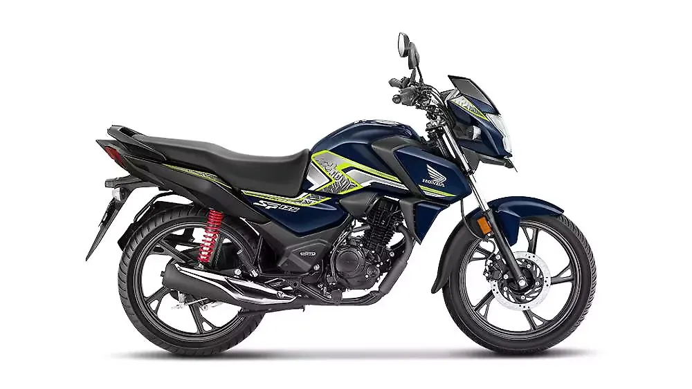
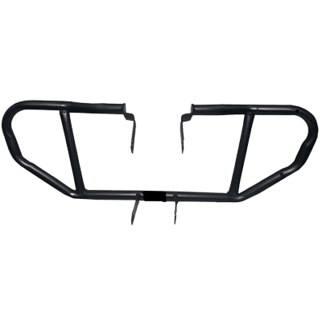
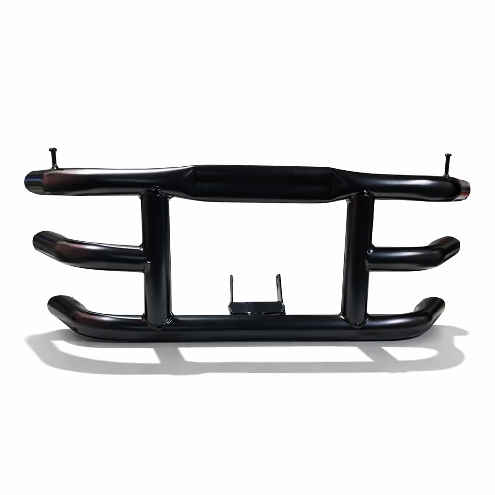
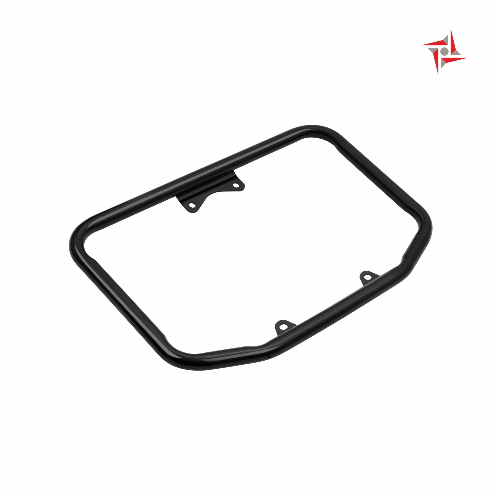
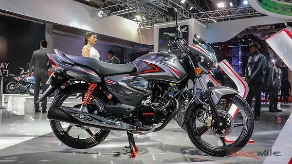
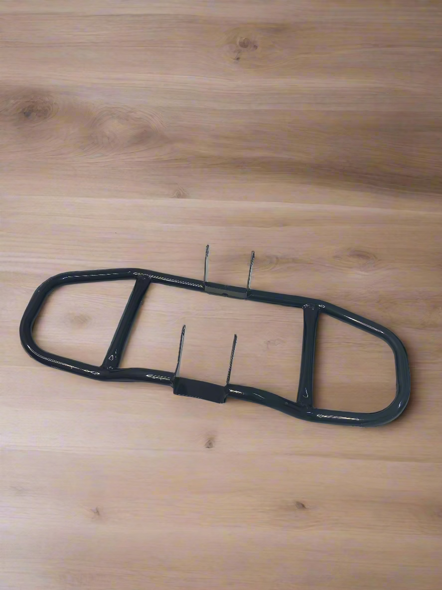
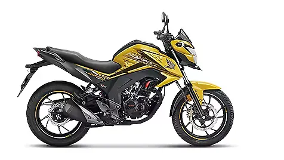
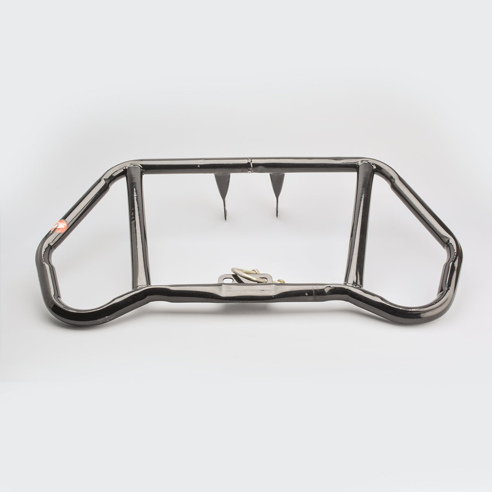
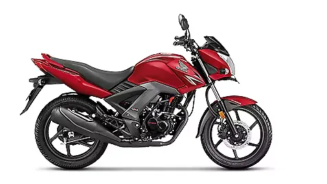
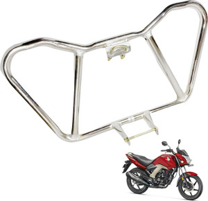

Leg guard photo review
Vehicle first, leg guard second. These third-party photos are candidates for approval. Photo sources
SP 125 Regular Leg Guard

Full vehicle
Leg guard candidateStandard guard listed for CB Shine 125 SP. Confirm it matches your Regular guard and SP 125 fitment.
SP 125 Heavy Leg Guard
Full vehicle
Leg guard candidate Three-rod heavy-duty guard listed for Honda SP 125.
SP 125HEAVY OE Clam Leg Guard
Full vehicleGuard photo pending
A clear photo of the OE clamp and mounting points is needed to distinguish this from the other SP 125 guards.
Shine 100cc Leg Guard
 Full vehicle
Full vehicle
Leg guard candidateParagon guard listed for Honda Shine 100.
CB Shine Leg Guard

Full vehicle
Leg guard candidateSona Automotive guard listed for CB Shine BS6 and several other models.
Hornet Leg Guard

Full vehicle
Leg guard candidateVehicle shown is the CB Hornet 160R. Confirm this is the Hornet generation your guard fits.
Unicorn & 160cc Heavy Leg Guard

Full vehicle
Leg guard candidateChrome butterfly-style heavy guard listed for Unicorn 160. Confirm the shape and finish match your stock.